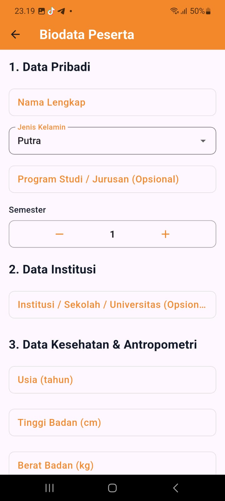

Asesmen Kebugaran Jasmani. Terukur & Otomatis.
Sistem evaluasi kebugaran berbasis instrumen Tes Kesegaran Jasmani Indonesia (TKJI). Kalkulasi instan, pelacakan riwayat, dan standar presisi dalam satu aplikasi.
Fungsionalitas Inti
Tes TKJI Terpadu
Lakukan rangkaian 5 tes standar (Lari 60m, Gantung Angkat Tubuh, Sit-up, Loncat Tegak, Lari Jarak Jauh) dengan panduan langsung dari aplikasi.
Kalkulasi Skor Langsung
Lewati proses pendataan biodata jika Anda hanya membutuhkan konversi nilai cepat. Sistem mengonversi data mentah menjadi poin (1-5) secara instan.
Pelacakan Riwayat
Setiap hasil kalkulasi—seperti skor akhir dan kategori kebugaran—disimpan secara berurutan untuk memantau progres fisik secara berkelanjutan.

Laporan Hasil Presisi.
Hilangkan bias dalam penilaian. MAPP-FIT secara otomatis menerjemahkan performa fisik Anda ke dalam kategori terstandarisasi.
- Total Skor: Agregat otomatis dari 5 komponen tes.
- Kategori Absolut: Klasifikasi otomatis (Baik Sekali, Baik, Sedang, Kurang, Kurang Sekali).
- Rincian Per Item: Transparansi konversi dari hasil aktual (detik/kali/cm) ke format poin norma TKJI.
Filosofi Mappideceng
Mappideceng Assessment of Physical Performance, Fitness, and Integrated Technology (MAPP-FIT) bukan sekadar alat ukur. Aplikasi ini berlandaskan filosofi Mappideceng (Bugis-Makassar) sebagai prinsip dasar perbaikan kualitas raga secara terukur, sistematis, dan berkelanjutan.